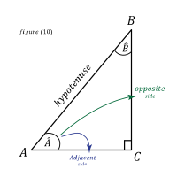

- ත්රිකෝණමිතික අනුපාත අනුසාරයෙන් කෝණ නිර්ණය කිරීමේදී ප්රතිලෝම ත්රිකෝණමිතික ශ්රිත භාවිත වේ.

$$sin\ \hat{A} \ =\ \frac{Opposite\ Side}{Hypotenuse}$$
$$sin\ \hat{A} \ =\ \frac{BC}{AB}$$
$$\hat{A} \ =\ sin^{-1}\left(\frac{BC}{AB}\right)$$
*\(X\) යනු ත්රිකෝණමිතික අනුපාතයක් විට \(sin^{-1} X\) මගින් නිරූපණය කරනුයේ
\(( sin\ X)^{-1}\) යන්න නොවන බව හොඳින් සිහි තබාගන්න.
එසේනම්,
$$sin^{-1} X\ \neq \ ( sin\ X)^{-1}$$ $$( sin\ X)^{-1} \ =\ \frac{1}{sin\ X}$$
මෙම වගුවෙන් ත්රිකෝණමිතික ශ්රිතයන්ගේ වසම් (Domains) දක්වා ඇත.
| ප්රතිලෝම ශ්රිතය | වසම | |
|---|---|---|
| 01. | \(\theta \ =\ sin^{-1} X\) |
|
| 02. | \(\theta \ =\ cos^{-1} X\) | |
| 03. | \(\theta \ =\ cosec^{-1} X\) |
|
| 04. | \(\theta \ =\ sec^{-1} X\) | |
| 05. | \(\theta \ =\ tan^{-1} X\) |
|
| 06. | \(\theta \ =\ cot^{-1} X\) |
1. \(sin^{-1} X\) හි ව්යුත්පන්නයsin x
$$\frac{d\left( sin^{-1} X\right)}{dx} \ =\ \frac{1}{\sqrt{1-x^{2}}}$$2. \(cos^{-1} X\) හි ව්යුත්පන්නයcos x
$$\frac{d\left( cos^{-1} X\right)}{dx} \ =\ \frac{-1}{\sqrt{1-x^{2}}}$$3. \(tan^{-1} X\) හි ව්යුත්පන්නයtan x
$$\frac{d\left( tan^{-1} X\right)}{dx} \ =\ \frac{1}{1+x^{2}}$$4. \(cosec^{-1} X\) හි ව්යුත්පන්නයcosec x
$$\frac{d\left( cosec^{-1} X\right)}{dx} \ =\ \frac{-1}{ | x | \sqrt{x^{2} -\ 1}}$$5. \(sec^{-1} X\) හි ව්යුත්පන්නයsec x
$$\frac{d\left( sec^{-1} X\right)}{dx} \ =\ \frac{1}{ | x | \sqrt{x^{2} -\ 1}}$$6. \(cot^{-1} X\) හි ව්යුත්පන්නයcot x
$$\frac{d\left( cot^{-1} X\right)}{dx} \ =\ \frac{-1}{1+x^{2}}$$
\(| x |\) යනු \(x\) හි මාපාංකය ලෙස අර්ථ දක්වයි. එනම් එය \(x\) හි ධන අගය වේ.
නිදසුන් ලෙස,
නිදසුන් ලෙස,
$$| 3 | = 3$$
$$| -3 | = 3$$
*****
නිදසුන්
නිදසුන 1
$$y\ =\ 5\ cos^{-1} x\ +\ 7\ sin^{-1} x$$
\(x\) විෂයෙන් අවකලනය කළවිට
$$\frac{dy}{dx} \ =\ 5\ \left[\frac{d\left( cos^{-1} x\right)}{dx}\right] \ +\ 7\ \left[\frac{d\left( sin^{-1} x\right)}{dx}\right]$$
$$\frac{dy}{dx} \ =\ 5\ \left[\frac{-1}{\sqrt{1-x^{2}}}\right] \ +\ 7\ \left[\frac{1}{\sqrt{1-x^{2}}}\right]$$
$$\frac{dy}{dx} \ =\ -5\ \times \ \left[\frac{1}{\sqrt{1-x^{2}}}\right] \ +\ 7\ \times \ \left[\frac{1}{\sqrt{1-x^{2}}}\right]$$
$$\frac{dy}{dx} \ =\ ( 7-5) \ \times \ \left[\frac{1}{\sqrt{1-x^{2}}}\right]$$
$$\frac{dy}{dx} \ =\ ( 2) \ \times \ \left[\frac{1}{\sqrt{1-x^{2}}}\right]$$
එමනිසා,
$$\frac{dy}{dx} \ =\ \frac{2}{\sqrt{1-x^{2}}}$$
නිදසුන 2
$$y\ =cot^{-1} x\ +\ 8x\ +\ 2$$
\(x\) විෂයෙන් අවකලනය කළවිට
$$\frac{dy}{dx} \ =\frac{d\left( cot^{-1} x\ +\ 8x\ +\ 2\right)}{dx}$$
$$\frac{dy}{dx} \ =\frac{d\left( cot^{-1} x\right)}{dx} +\frac{d( 8x)}{dx} +\frac{d( 2)}{dx}$$
$$\frac{dy}{dx} \ =\left[\frac{-1}{1+x^{2}}\right] \ +\ ( 8\times 1) \ +\ 0$$
$$\frac{dy}{dx} \ =\left[\frac{-1}{1+x^{2}}\right] \ +\ 8$$
$$\frac{dy}{dx} \ =\frac{-1}{1+x^{2}} \ +\ \frac{8\ \times \left( 1+x^{2}\right)}{1+x^{2}}$$
$$\frac{dy}{dx} \ =\frac{-1\ +\ 8\ +\ 8x^{2}}{1+x^{2}}$$
එමනිසා,
$$\frac{dy}{dx} \ =\frac{8x^{2} \ +\ 7}{1+x^{2}}$$
නිදසුන 3
$$y\ =cos^{-1} x\ +\ 5x^{2}$$
\(x\) විෂයෙන් අවකලනය කළවිට
$$\frac{dy}{dx} \ =\frac{d\left( cos^{-1} x\ +\ 5x^{2}\right)}{dx}$$
$$\frac{dy}{dx} \ =\frac{d\left( cos^{-1} x\right)}{dx} +\frac{d\left( 5x^{2}\right)}{dx}$$
$$\frac{dy}{dx} \ =\frac{-1}{\sqrt{1-x^{2}}} \ +\ 5\ \times \ \frac{d\left( x^{2}\right)}{dx}$$
$$\frac{dy}{dx} \ =\frac{-1}{\sqrt{1-x^{2}}} \ +\ 5\ \times \ 2x^{1}$$
එමනිසා,
$$\frac{dy}{dx} \ =\frac{-1}{\sqrt{1-x^{2}}} \ +\ 10x$$